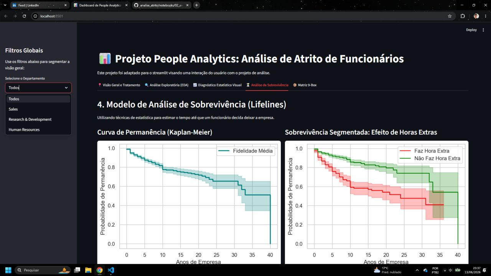
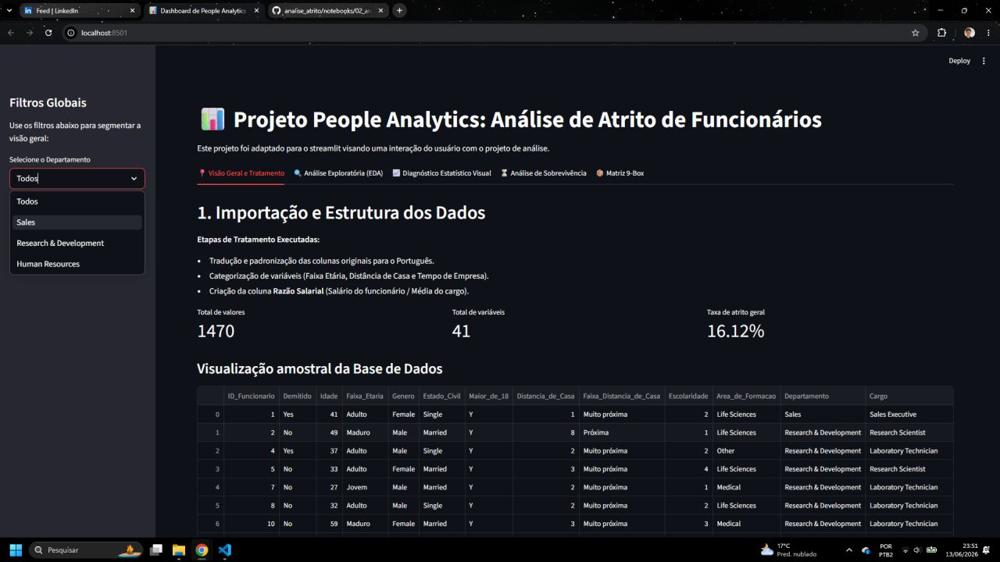
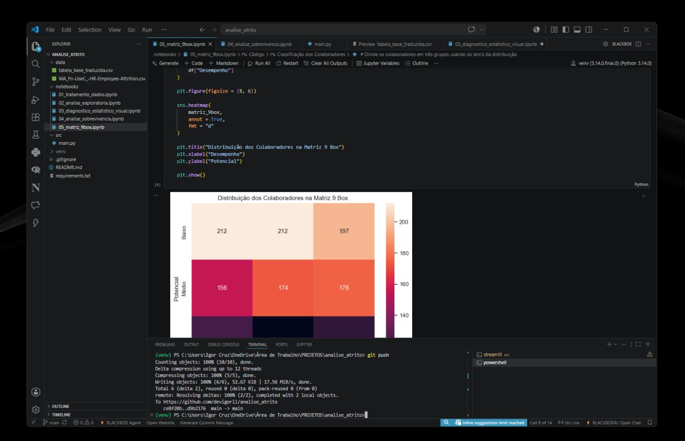
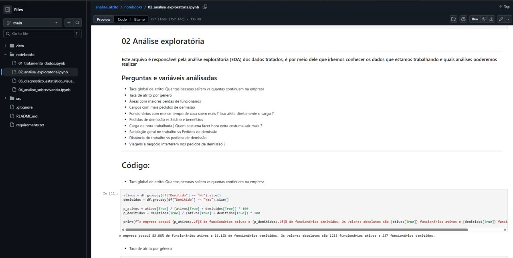

Análise Atrito (People Analytics)
Nesse projeto, eu usei Python e bibliotecas como Pandas e Scikit-Learn para criar um modelo de machine learning que calcula o risco de um funcionário sair da empresa. A ideia foi analisar o histórico do pessoal para prever o "tempo de permanência" de cada um e ajudar o RH a segurar os talentos antes que eles peçam demissão.




Deslize para os lados para ver mais fotos